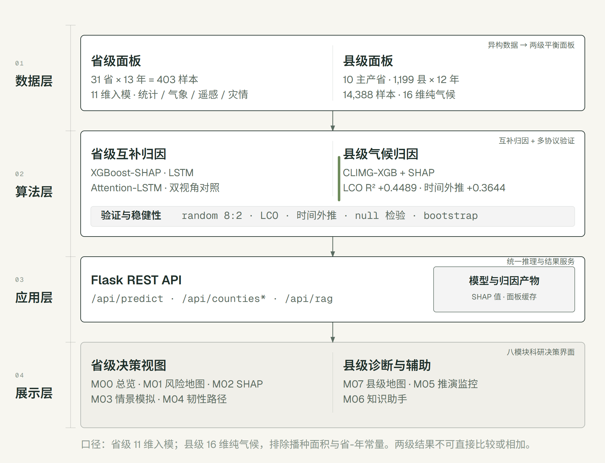
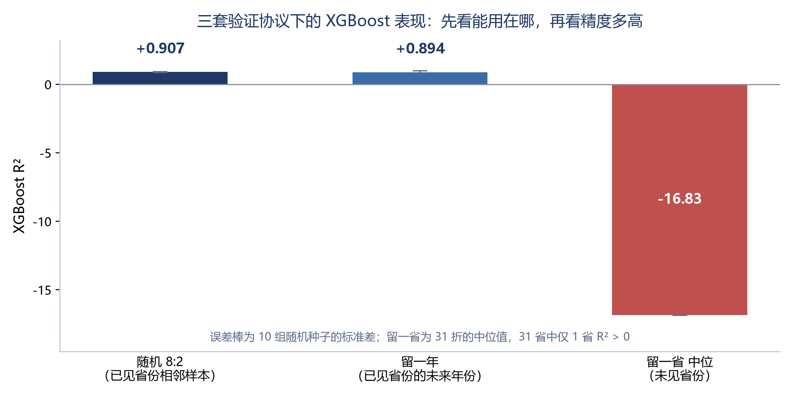

2026年第八届全球校园人工智能算法精英大赛 · 算法创新赛
禾衡·粮食生产气候风险归因决策系统
AI+学科交叉 · 技术方案
摘要
极端气候条件下的粮食生产风险，不只是“产量高不高”的问题。农业气象研究需要判断气候、灾害与生产投入因子的相对贡献，机器学习则提供了处理多因子非线性关系的手段。但直接把随机划分下的高 R² 当作跨区域预测能力，容易把省份固有生产基线误读为气候信号；在县级尺度直接使用总产量，又容易让播种面积规模效应掩盖气候贡献。本作品面向作物学与农业资源与环境中的区域粮食安全风险评估方向，构建省级、县级两级农业面板，以“先体检、再归因”为技术主线，形成可复核、可交互的科研分析工具。
省级面板覆盖 31 个省级单元 2011—2023 年共 403 条样本、11 维入模特征，目标为粮食单产；县级面板覆盖 10 个粮食主产省 1,199 个县域 2012—2023 年共 14,388 个县年样本，入模特征为 16 维纯气候变量。方法上采用 XGBoost-SHAP、LSTM、Attention-LSTM 三类模型开展互补归因，以线性混合效应模型分解省份基线方差，并用随机 8:2、留一年、留一省、分层 5 折四类协议检验模型的适用边界。结果显示：省级 XGBoost 随机 8:2 测试集 R² 为 0.9072±0.0383，但留一省空间外推中位 R² 为 −16.835，31 折中仅 1 折为正；混合效应 ICC 为 0.9710，说明高分主要来自省份固有基线。县级层剥离播种面积后，16 维纯气候特征在未见县和未来年份分别达到 LCO R² 0.4489±0.0065 与时间外推 R² 0.3644±0.0044；改用县级单产口径后分别为 0.5208±0.0073 与 0.4474±0.0064。置换检验、bootstrap 与方向稳定性分析支持“县级气候变量具有可迁移解释力”，但不支持跨省产量预测或政策因果推断。
在上述证据基础上，作品实现包含 M00—M07 八个模块的可视化决策支持系统，覆盖风险地图、SHAP 归因、情景模拟、韧性路径、县级诊断与知识助手。系统在普通 CPU 环境运行，服务端单次请求实测均值 0.39 秒，县级面板与模型全量重建约 18 秒，不依赖 GPU。系统主动展示模型卡、年份外推标记和“风险等级不等于产量”的边界提示。本方案把 AI 的价值落在科研数据处理、可解释归因和可复现验证三个环节，为农业气象与区域粮食风险研究提供一套可迁移、低成本的学科交叉工具。
关键词： AI+学科交叉；作物学；农业气象；可解释机器学习；SHAP；混合效应模型；粮食风险
一、项目概述
1.1 背景与意义
粮食生产同时受到气候、灾害、灌溉、投入和区域资源禀赋影响，具有多因子耦合、非线性响应和空间异质性强等特点。农业气象与作物学传统研究擅长机理解释和田间验证，但在处理高维、多源、非线性的面板数据时，统计模型的表达能力有限。机器学习可以捕捉复杂交互关系，却容易把“记住了哪个省”误当成“理解了气候如何影响产量”。两类学科各自有效，真正缺的是一条把农学问题、统计校核和机器学习连接起来的工作流。
这一缺口在三个具体环节上最明显。第一，气象格网、遥感影像、统计年鉴和灾害统计的时间分辨率、空间单元与字段口径不同，研究者需要反复清洗和对齐。第二，省级面板只有 31 个空间单元、十余年时间，随机划分会让同一省份的相邻年份同时进入训练集和测试集，模型可以依靠省份身份获得高分。第三，单一 SHAP 排序或注意力权重容易被直接当作政策依据，但不同解释方法的排序可能分歧，统计关联也不等于因果效应。
本作品把上述问题转化为三个可计算任务：在已知省份内部识别因子边际贡献；用不同原理的模型和多协议验证检查结论是否稳健；把模型适用边界显式写进分析结果和系统界面。其学科意义在于，让 AI 不只输出一个分数，而是帮助农业气象研究者回答“哪些因子值得继续做机理研究、哪些结论可以跨区域比较、哪些结果只能停留在样本内”。
1.2 核心目标
目标层级
具体目标
已形成的可核验结果
数据层
建立省级与县级两级、可追溯的农业面板
省级 403 条样本 × 11 维特征；县级 14,388 个县年 × 16 维纯气候特征；字段来源、单位和处理记录留档
方法层
建立多模型归因与多协议验证流程
XGBoost-SHAP、LSTM、Attention-LSTM 三模型对照；随机 8:2、留一年、留一省、分层 5 折四类协议
统计层
解释高分从哪里来，区分基线、规模与气候信号
混合效应 ICC=0.9710；县级规模诊断显示 log(总产量) 方差约 92% 可由播种面积解释
应用层
交付面向科研与教学的交互工具
M00—M07 八个模块；CPU 推理；单次请求均值 0.39 秒；模型卡与外推标记随界面呈现
学科层
形成可复用的 AI+农业气象研究范式
从“单模型随机划分”转为“多模型归因 + 多协议体检 + 边界披露”
1.3 国内外研究现状与缺口
气候—粮食关系研究已有较长的农学与计量基础。IPCC 第六次评估报告系统梳理了气候变暖对农业系统的风险，Lobell 等和 Schlenker 等的研究则揭示了温度、干旱等因子对作物产量的非线性影响[1-4]。这些工作提供了机理解释和变量选择依据，但多数传统统计模型对高维交互和区域异质性的刻画能力有限。
随着多源数据可得性提高，XGBoost、随机森林和 LSTM 等模型被广泛用于产量建模。Chen 与 Guestrin 提出的 XGBoost 在结构化数据上具有稳定的拟合能力[5]，因此在农业面板中被大量采用。问题在于，很多应用仍以随机划分的测试集 R² 作为主要证据，忽略了面板数据的空间和时间层次。Roberts 等指出，对具有空间、时间或层次结构的数据，随机交叉验证会造成泛化能力高估，应使用留空间、留时间的协议[6]。这一方法学提醒在农业 AI 实践中尚未充分落地。
可解释性方向也存在类似缺口。SHAP 可以把预测分解为特征贡献，适合回答“在当前模型和样本分布下，哪个特征影响更大”，但它不提供因果识别。Jain 与 Wallace 指出，注意力权重与模型决策之间不存在天然的一一对应[7]；Wiegreffe 与 Pinter 进一步讨论了注意力作为解释需要满足的检验条件[8]；Krishna 等则报告了不同解释方法之间的排序分歧[9]。因此，把单一解释工具的输出直接当成政策依据，风险很高。
从成果形态看，大量研究停留在论文图表和离线脚本，缺少面向非技术用户的交互工具；从尺度看，省级研究下沉到县级时，总产量会被播种面积强烈主导，若不做规模剥离，容易把“多种了地”误读成“气候变好”。本作品针对这四个缺口，分别用两级面板、多协议验证、多解释视角和可交互系统作出回应。
1.4 主要工作与创新点
创新点
传统做法
本方案的做法
对应证据
先体检、后归因
只报随机 8:2 的测试集 R²
同时报告随机、留一年、留一省和分层 5 折，并用混合效应分解方差
0.9072 与 −16.835 并列；ICC=0.9710
跨尺度粒度递进
省级失败后停在“未来下沉到县域”
已构建 1,199 县 × 12 年县级面板，剥离规模后检验纯气候迁移
CLIMG LCO 0.4489；时间外推 0.3644
规模混淆控制
直接把播种面积放入特征
县级主模型排除播种面积和省—年共享常量；另做单产口径对照
总产方差约 92% 由面积解释；单产 LCO 0.5208
解释分歧显性化
把单一 SHAP 排序当作结论
SHAP 与 Attention 并列，报告排序差异和种子不稳定性
Spearman −0.0545；Top-3 重合 1/3
边界即产品
只在论文局限性里写模型不能用在哪里
在 M00、M07 和模型卡中显示外推年份、风险含义和不能回答的问题
2023 年无真值标记；what-if 与政策因果分离
低成本可复制
依赖 GPU 和大规模平台
CPU 推理、单体服务、公开数据源、脚本化重建
单次请求 0.39 秒；全量重建约 18 秒
二、需求分析
2.1 学科专业界定
本作品聚焦农学门类下的作物学与农业资源与环境（区域粮食安全风险评估方向） ，交叉农业气象学、统计学和计算机科学与技术。核心学科环节包括：
科研数据处理与可视化 ：把气象、遥感、统计年鉴和灾害统计统一为可分析的面板；理论研究 ：识别气候与灾害因子对粮食生产的边际贡献及区域分化；科研探索与教学实训 ：让研究者能够复核口径、比较模型、查看边界，并把分析过程用于课堂演示和科研训练。
目标用户是做气候—产量分析的农学研究生、青年教师和科研助理。他们需要的不是一个替代其学科判断的“产量预测器”，而是一个能查、能解释、能说明适用条件的分析工具。农户、政府部门和企业不是本作品当前的主要用户，系统也不承担实时预警或政策效果评估职责。
2.2 现行科研流程与痛点
环节
现行做法
主要痛点
对研究的影响
选题与文献
阅读农学、气象和计量文献，确定变量
学科术语与模型术语不统一，指标定义不一致
研究问题容易停留在“气温是否影响产量”
数据获取
分别下载年鉴、格网、遥感与灾害数据
来源分散、时间覆盖不一、字段单位不同
重复劳动多，数据版本难以追溯
清洗与对齐
Excel、脚本和人工检查混合
空间单元、时间窗口、缺失值处理缺少统一记录
换一个人复现时结果可能不同
指标构建
年均值、总量或单产口径并行
总产与单产混用，生长季与年均值混用
结论不可比，规模效应可能掩盖气候信号
建模与归因
单模型、随机划分、单一 SHAP
高分可能来自省份身份；解释排序缺少对照
把样本内拟合误读成跨区域预测
验证与写作
报告一个最好的 R²
负结果不被展示，失败边界不进入论文
审稿人追问换省、换年后难以回答
教学与汇报
静态图和 PPT
图在 PPT 里，别人不能自己查
结论难以复用，课堂演示只能“看图说话”
上述痛点可以归纳为四类：数据对齐成本高、口径不统一、评估与解释容易虚高、成果难以转化 。这四类问题都不是单纯“换个更强的模型”能解决的，需要数据工程、统计校核和产品设计共同介入。
2.3 需求证据与优先级
本方案的需求证据由三部分组成：公开文献中的方法学共识、本项目在两级面板构建中的可复核工程记录、以及围绕科研任务链的流程拆解。需要说明的是，截至材料日期，外部用户访谈和教学试点尚未完成，因此本方案不把研发团队的判断写成“用户普遍认为”，也不报告满意度和效率提升比例；外部试用被列为实施阶段的质量 gate。
需求
证据来源
优先级
对应功能
验收口径
多源数据统一对齐
两级面板构建记录；字段来源与版本留档
P0
数据层、M00
面板可由脚本重建；字段可追溯
总产/单产、年均/生长季口径区分
文献与数据字典；县级规模诊断
P0
数据层、模型卡
每个指标有定义、单位、时间窗口
随机划分之外的空间与时间验证
Roberts 等的方法学结论[6]；省级留一省结果
P0
验证层、M07
同时报告随机、留一年、留一省
多解释视角对照
SHAP 与 Attention 的排序差异[7-9]
P0
M02、M07
不把单一排序写成因果结论
反事实情景与对策转化
科研任务链拆解
P1
M03、M04
情景结果标注为 what-if
教学演示与新人上手
系统走查与页面结构
P1
M00、M06
任务路径可在十分钟内走通
2.4 AI 赋能需求与切入点
需要区分“工程使能”和“AI 直接贡献”。多源数据对齐、坐标转换、字段映射属于数据工程；XGBoost、SHAP、LSTM、注意力门控和混合效应模型才是本作品的算法核心。把两者混在一起，会让“AI+学科交叉”变成一句空话。
需求
由什么解决
AI 是否直接参与
对应模块
多源数据时间、空间对齐
pandas、GIS、栅格聚合、数据字典
否，属于使能层
数据层
多因子非线性归因
XGBoost + SHAP
是
M02、M07
模型是否可跨区域、跨年份
留一省、留一年、分层 5 折、置换检验
是，属于机器学习评估方法
验证层
高分是否来自省份基线
线性混合效应与方差分解
是，统计学习交叉
模型卡、M00
情景反事实
模型推理 + 白箱规则
部分参与
M03、M04
方法论文档检索
BGE-M3 + BM25 + 重排 + 生成
是
M06
本作品明确不做三类承诺：不把省级模型用于未见省份的产量预测；不把 SHAP 排序解释为因果效应；不把历史分布内的 what-if 情景解释为政策干预效果。这个边界不是保守，而是学科交叉能够成立的前提。
三、解决方案设计
3.1 总体架构
系统采用“数据层—算法层—应用层—展示层”四层架构。数据层负责两级面板和字段治理；算法层负责省级三模型归因、县级 CLIMG-XGB、混合效应校核和多协议验证；应用层通过 Flask REST API 统一封装预测、县级查询和知识检索；展示层把结果组织为八个可交互模块。

图 1 系统总体架构：省级与县级两级面板进入分层归因与多协议验证，经统一 REST API 支撑八个模块 四层之间只通过面板、模型产物和 HTTP 接口耦合。模型版本更新时，只要输入特征顺序和输出接口不变，前端模块不需要重写；当模型不可用或数据漂移时，系统可以降级到规则引擎和历史统计，而不是让整个页面失效。这一“模型能力与系统能力分离”的设计，是把科研模型做成可持续工具的关键。
3.2 技术选型依据
层次
选型
选择理由
已知边界
前端
Vue 3 + ECharts
科研用户需要交互探索；ECharts 适合省域地图和时间轴
复杂样本级可视化仍需补接口
后端
Flask 3 + 单端口部署
轻量、易在普通服务器或教学机房部署
高并发场景需再加缓存或服务拆分
主模型
XGBoost
适配小样本、中维特征、非线性和零膨胀灾害变量
不能自动提供因果解释
归因
SHAP
可给出全局重要性和单样本可加性分解
受模型和样本分布影响，不等于因果
时序对照
双层 LSTM
提供不同函数形式的参数化对照
年度数据 TIMESTEPS=1，不适合长时序预测
第二解释视角
Attention-LSTM 特征级门控
观察模型内部权重分配，与 SHAP 形成对照
权重不稳定时不能作为政策排序
统计校核
线性混合效应模型
把省份随机截距显式拆出，解释 R² 来源
仍是关联分析，不能识别因果
知识助手
BGE-M3 + BM25 + 重排 + 生成
让方法论文档可被自然语言检索
生成内容必须回到原文核对
技术选型遵循“与数据规模匹配”的原则。省级面板 N=403，深度模型的可训练信息有限；县级面板扩大到 14,388 行后，XGBoost 仍是稳定主引擎，LSTM 类模型在同一口径下表现更弱。因此本方案用多个原理不同的轻量模型做归因对照，而不是堆叠一个更大的模型。
3.3 数据构建与特征工程
数据集
空间与时间范围
规模
目标变量
入模特征
省级面板
31 个省级单元，2011—2023 年
403 行 × 27 列
粮食单产（kg/ha）
11 维：灌溉率、洪涝占比、日照、气温、SPEI、降水、机械化、化肥、旱灾面积、水灾面积、NDVI
县级面板
10 个粮食主产省，1,199 县，2012—2023 年
14,388 个县年 × 36 列
粮食总产量（主口径）；单产为对照口径
16 维纯气候：年均气候 3 维、SPEI 2 维、生长季/极端/季节指数 11 维
省级数据来自农业统计年鉴、气象资料、MODIS NDVI、灾害统计和空间边界。时间对齐把气象日值聚合为年度与生长季指标，把 MODIS 月度 NDVI 聚合为 4—10 月生长季均值；空间对齐以省级行政边界为统一单元。CLCD 耕地比例用于数据对齐和质量控制，不把它写成“已完成逐像元耕地加权”。所有特征在进入模型前按全列 Z-score 标准化，极端灾害年份保留，不做异常值剔除。
县级数据来自县域统计年鉴、TerraClimate 4.6 km 月度格网、SPEIbase 0.5° 数据和县级行政边界。县级主模型只使用气候变量，主动排除播种面积和省—年共享常量。原因是一个可检验的规模诊断：log(总产量) 与 log(播种面积) 的相关系数为 0.9597，播种面积可解释约 92% 的总产量方差。若把面积放回特征，LCO R² 会从 0.4489 升到 0.6465，但多出来的部分主要是“规模解释规模”，不能当作气候解释力。
数据质量方面，省级面板无缺失；县级面板共 14,388 个县年，其中总产量真值 10,407 行、单产对照样本 4,693 行、627 县。2023 年县域统计年鉴未刊相应产量指标，该年归因属于模型外推，系统中已显式标注；2022 年有真值的县年为 903/1,196，覆盖率为 76%。这些覆盖差异不掩盖，直接进入模型卡和界面提示。
3.4 核心算法模块
3.4.1 XGBoost-SHAP 归因
XGBoost 通过加法树集成拟合非线性关系，目标函数同时考虑预测损失和树结构复杂度。主实验采用 n_estimators=150、max_depth=6、learning_rate=0.1、objective=reg:squarederror，随机种子 0—9 共 10 组。参数没有做大规模网格搜索，目的是保持不同模型之间的可比性，避免把评估重点转移到调参收益上。
SHAP 把单样本预测分解为基准值与各特征贡献之和：ŷ_i = φ_0 + Σφ_ij。全局重要性使用平均绝对 SHAP 值，局部解释使用单省贡献分解。SHAP 适合回答“在当前模型和样本分布下，哪个特征对预测的边际贡献更大”，但不提供因果识别。
3.4.2 LSTM 对照模型
LSTM 采用双层结构：LSTM(64, return_sequences=True) → LSTM(32) → Dropout(0.2) → 全连接输出。优化器为 Adam，学习率 0.001，损失函数为均方误差，批次大小 16，最大迭代 100 轮，早停 patience=10，输入时间步长 TIMESTEPS=1。由于省级面板只有 13 个年度，LSTM 在本研究中不作为长时序预测器，而是作为参数化方式的对照，检验更换模型函数形式后拟合效果和误差结构是否发生实质变化。
3.4.3 Attention-LSTM 特征级门控
传统时间步注意力要求序列长度大于 1，而本数据的 TIMESTEPS=1，时间步注意力会退化。因此模型把注意力作用在 11 个特征维度上，学习一组输入相关的软掩码：e_j = vᵀtanh(W_h x_j + b_h)，α_j = exp(e_j)/Σexp(e_k)，x'_j = α_j x_j。门控后的特征进入与 LSTM 基线相同的两层 LSTM 和全连接输出。
α 可以理解为模型在当前样本上对第 j 个特征的内部权重偏好。它与 SHAP 的区别在于：SHAP 衡量特征对最终预测的边际贡献，α 衡量模型前向计算中主动分配了多少权重。两者不是同一个量，也不应期待完全一致。Jain 与 Wallace、Wiegreffe 与 Pinter 的工作都提醒，注意力权重不能未经检验就当作解释[7-8]。因此本方案只把 α 作为第二视角，并与 10 个随机种子的排序稳定性一起报告。
3.4.4 线性混合效应方差分解
为区分省份固有基线与年度波动，构建带省级随机截距的线性混合效应模型：y_it = α_i + βX_it + ε_it，其中 α_i 为省份随机截距，β 为跨省共享固定效应，ε_it 为省内年度残差。组内相关系数定义为 ICC = σ²_α / (σ²_α + σ²_ε)。模型使用 REML 估计、lbfgs 优化，并用似然比检验比较混合效应模型与 pooled OLS。
该模型的作用不是提高预测精度，而是把 XGBoost 隐式学到的“省份指纹”显式拆出来。ICC 越接近 1，说明总方差中由省份基线解释的比例越高；这时再把随机划分的高 R² 解读为“气候预测能力”就不成立。
3.4.5 多协议交叉验证
协议
训练与测试划分
检验的问题
结果解读
随机 8:2
按样本随机划分 80% 训练、20% 测试，10 组种子
同一省份相邻样本的拟合与省内归因
乐观口径，不能作为跨省预测证据
留一年
每次留出一个年份，其余年份训练，13 折
已见省份对未来年份的时间外推
检验年度趋势与气候波动的时间稳定性
留一省
每次留出一个省份，其余 30 省训练，31 折
未见省份的空间外推
最严格口径，直接检验省份基线依赖
分层 5 折
按省份与年份分层，5 折
混合未见样本的行级稳健性
介于随机划分与留一省之间
评价指标使用决定系数 R² 和均方根误差 RMSE。R² 为负表示模型误差大于以测试集均值为预测的基线；留一省同时报告中位数与均值，均值容易受极端负值影响。所有模型报告 10 组种子的均值和标准差，留一年与留一省报告折间分布，不只报告最好折。
3.4.6 县级尺度递进与规模混淆控制
县级层采用 CLIMG 16 维纯气候特征，逐步比较 CLIM3、CLIM5 和 CLIMG 三组特征。空间迁移使用 Leave-County-Out（LCO），按县分组；时间迁移使用训练期 ≤2019、测试期 2020—2022。主目标为县级总产量，另用单产口径做对照，检查剥离面积后的气候变化。
为了证明结果不是特征数或结构性假象，配套三类检验：逐列打乱特征的 permutation null、跨县 bootstrap 增益显著性、以及训练期与测试期的 SHAP 方向一致性。只有同时通过“真实值高于 null、增益置信区间不含 0、主要方向跨时间同号”三个条件，才把某类气候特征写入可迁移结论。
3.5 系统功能模块
模块
主要功能
面向的学科环节
M00 系统总览
数据覆盖、样本量、模型指标、模型卡入口、边界披露
科研入门与口径核对
M01 风险时空地图
31 省 × 13 年风险等级地图、时间轴、历史曲线
区域分化与年度演化观察
M02 SHAP 归因看板
全局重要性、单省贡献分解、Top-K 因子查看
因子归因分析
M03 参数情景模拟
省级风险五维滑块；玉米长势四维滑块，返回 778 县 GSI
反事实推演与教学演示
M04 韧性路径推荐
12 条白箱规则 × 三阶段（0—1 年、1—3 年、3—5 年）
把归因结果转化为分阶段对策
M05 推演监控
推理链路、响应状态、过程留痕
复现实验与排查异常
M06 知识助手
方法论文档的混合检索与问答
科研新人查阅口径与方法
M07 县级地图
10 主产省 1,199 县的逐年气候异常地图、单县轨迹与 Top-6 气候贡献
跨尺度诊断与粒度递进观察
图 2 县级风险地图（M07）：1,199 个县级单元的气候异常、单县逐年轨迹与当年归因 Top-6 M02 当前完整支持全局重要性与单省贡献分解；单样本瀑布图和蜂群子图仍依赖样本级归因接口的进一步完善，本方案不把未完成子视图计入已交付能力。M03 的玉米页输出的是相对长势指数 GSI，不是亩产、公斤或吨；它是积温—水分—热害的限制因子响应模型，不是 DSSAT 机理模型，也不是“能不能种”的最终判定。
3.6 边界设计
系统把边界做成产品的一部分，而不是只在论文最后写一段局限性。
年份外推标记 ：2023 年县级数据无产量真值，M07 默认落在最新有真值的年份，选中 2023 年时显示外推警示；风险含义提示 ：地图上的风险等级是气候条件综合，不等于产量，也不等于减产概率；情景语义提示 ：M03 是历史输入空间内的 what-if 分析，不回答政策干预的因果效果；模型卡 ：记录数据版本、特征顺序、超参数、随机种子、评价协议和已知失败模式；方向稳定性 ：县级归因展示跨时间同号特征，方向翻转的特征不进入硬结论。
四、方案可行性
4.1 技术可行性
本方案已完成从数据到系统的端到端实现，不是停留在概念验证。
维度
已验证事实
说明
数据管线
省级 403 行、县级 14,388 行均可重建
字段来源、单位和处理记录留档
模型训练
三模型、四协议、10 组种子均已完成
评价脚本与模型卡可复跑
县级站点
M07 已接入 1,199 县 × 12 年
空间粒度递进进入产品
系统模块
M00—M07 八个模块已实现
预测、归因、情景、路径、知识检索统一 API
运行环境
普通 CPU 环境
单次请求 0.39 秒；不依赖 GPU
可复现性
超参、种子、特征顺序、标准化器、模型文件落盘
离线评估与在线推理使用同一口径
工程加固
6 项安全响应头、请求限流、WCAG 2.2 AA
适配教学与科研服务器
4.2 经济可行性
成本项
估算
说明
数据采购
0 元
使用公开统计、气象、遥感和灾害数据
计算设备
0—1,500 元/年
可用现有开发机；若租用普通 CPU 云主机，按百元/月估算
存储
小于 2 GB
面板、模型、SHAP 产物和前端静态文件
软件许可
0 元
Python、Flask、Vue、XGBoost、ECharts 等开源栈
运维人力
约 0.5 人日/月
单体服务，无微服务集群和专用中间件
上述为估算值，不含团队研发人工。方案的成本优势来自三点：不依赖 GPU、不依赖商业数据、单体服务即可部署。对同类院校而言，最稀缺的不是算力，而是把数据口径、模型边界和界面语义讲清楚的人力。
4.3 推广价值与复用条件
本方案可迁移到其他作物、其他区域和其他“气候—生产”议题，但需要满足三个条件：
有连续 10 年以上的区域面板，空间单元不少于 30 个，否则留一单元验证没有意义；
有可追溯的气候、统计和生产投入字段，且目标变量与规模变量能够分开；
有至少一名熟悉该学科口径的研究者参与变量定义和结果复核。
推广路径分为三步：先在单一课题组的科研流程中替代重复的数据对齐和归因查询；再进入课程或科研训练，作为“可解释 AI + 农业气象”的实训平台；最后面向同类院校开放数据字典、模型卡和部署脚本，按作物或区域替换数据，不改系统架构。
4.4 风险与应对
风险
表现
应对
数据覆盖不足
部分县年缺产量真值；2023 年无真值
界面标注外推年份；模型卡记录覆盖率；不把外推结果当实测
模型误用
把风险等级当产量，把 SHAP 当因果
M00 与 M07 固定提示；报告中使用“关联”“边际贡献”表述
解释不稳定
注意力排序随种子变化
10 种子稳定性检查；注意力只作诊断，不作主排序
规模混淆
总产量被播种面积主导
县级主模型排除面积；单产口径对照；报告 92% 规模诊断
部署与维护
教学机房无 GPU、运维人员少
CPU 推理、单体服务、一键重建、离线便携包
伦理与授权
教学数据或科研成果涉及授权
只使用公开数据；不采集个人身份信息；外部试用另行知情同意
五、项目实施
5.1 实施计划
阶段
时间
主要任务
产物
状态
问题定义
2026 年 6—7 月
文献梳理、学科口径确定、数据资产盘点
研究问题、变量清单、数据字典
已完成
数据底座
2026 年 7—8 月
省级面板构建、气象与遥感对齐、质量审计
403 × 27 省级面板
已完成
方法与验证
2026 年 8—9 月
三模型训练、SHAP、混合效应、四类协议
模型文件、模型卡、稳健性报告
已完成
县级扩展
2026 年 9—10 月
县级面板、CLIMG 模型、规模剥离、M07 接入
14,388 县年面板、县级地图
已完成
系统交付
2026 年 10 月
API、八个模块、安全与无障碍、离线部署
Web 系统、部署脚本、操作手册
已完成
外部验证
2026 年 10—11 月
5—8 人任务试用、匿名问卷、教学演示
试用记录、反馈编码、改进清单
待开展
推广准备
2026 年 11 月起
数据字典开放、同类院校复用、课程模块
复用指南、教学案例包
规划中
5.2 资源保障
数据资源全部来自公开渠道，逐项记录来源、时间覆盖、空间单元和处理口径。计算资源为普通开发机和 CPU 云主机，训练与推理均不依赖 GPU。软件资源采用开源栈，前端、后端、模型和脚本均可在单机环境复现。文档资源包括数据说明、模型卡、规则引擎说明、操作手册和演示脚本，支撑评审复核与后续维护。
5.3 团队分工与协作
角色
主要职责
质量责任
队长（算法与统筹）
问题定义、建模、归因分析、多协议验证、整体进度
对核心数字和结论边界负责
成员 A（系统与部署）
数据管线、后端 API、前端集成、离线部署
对可复现性和工程指标负责
成员 B（文档与可视化）
数据说明、模型卡、图表、参赛材料、匿名化检查
对材料一致性和可读性负责
协作机制采用三条 gate。第一条是口径 gate ：任何建模结论写入文档前，必须用农学语言复述一次，说明变量定义、时间窗口、目标变量和不能回答的问题；复述不通就回到定义环节。第二条是复现 gate ：核心数字必须能由脚本重跑，模型文件、随机种子和特征顺序一致。第三条是匿名 gate ：所有对外材料检索单位名称、院系名称、指导教师姓名和个人身份信息，命中数必须为 0。
5.4 质量、伦理与知识产权
本方案使用公开统计数据、公开气象格网和公开遥感产品，不包含个人身份信息；外部试用如涉及访谈或问卷，将另行说明目的、匿名方式和退出机制。所有引用文献均在附录列出，图表和数据来源可追溯。系统不把统计关联写成因果结论，不把模型外推写成实测结果，不把研发团队判断写成用户共识。
作品由团队独立研发，代码、模型和文档的版本关系在材料包中说明。涉及第三方开源组件的部分遵循相应许可证；涉及软著、论文或其它成果的佐证材料，按大赛要求另行提交，不在正文中暴露单位信息。
5.5 提交材料清单
材料
内容
状态
技术方案
本文件，含需求、架构、算法、可行性、实施、效果、展望和附录
本次完成
答辩材料
问题—方法—证据—系统—边界五段式
已有基础版本，按本方案口径复核
演示视频
3—5 分钟，展示 M00、M02、M03、M07 与边界提示
脚本已完成，待录制
佐证材料
模型卡、性能实测、数据说明、系统截图、匿名试用记录
已有部分，外部试用待补
代码与模型
数据管线、训练脚本、API、前端、模型文件
已具备
六、应用效果
6.1 验证框架
本章只报告三类可复核证据：模型实验、系统性能、任务链走查。外部用户试用截至材料日期尚未完成，因此不报告满意度、任务完成率或“效率提升多少倍”。这类证据需要真实用户、真实任务和现场记录，不能用演示视频替代。
验证层级
回答的问题
本方案使用的证据
模型有效性
模型是否真的比基线稳健？高分从哪里来？
四类交叉验证、混合效应、消融、置换检验、bootstrap
系统可用性
系统能否在普通环境运行？结果是否可追溯？
响应时间、重建时间、模块走查、模型卡、安全与无障碍检查
学科应用性
结果是否能被科研或教学任务使用？
省级归因、县级诊断、情景推演三类任务链；外部试用待开展
6.2 模型效果
（1）随机 8:2 下的模型对照。 三类模型在同一数据版本、同一特征顺序和同一随机种子下训练。XGBoost 的测试集表现最好，但训练集 R² 达到 1.0000，说明树模型对 403 条样本的拟合能力很强；这一结果只能作为省内拟合证据，不能直接外推。
模型
测试集 R²
测试集 RMSE（kg/ha）
训练集 R²
角色
XGBoost
0.9072±0.0383
312.5±54.2
1.0000
主归因模型
LSTM
0.8856±0.0223
362.0±29.2
0.9280±0.0119
参数化对照
Attention-LSTM
0.8160±0.0502
456.4±59.6
0.8617±0.0536
第二解释视角
（2）多协议验证。 随机划分与分层 5 折的结果接近，留一年仍有 0.8943，但留一省中位 R² 降到 −16.835，31 折中仅 1 折为正。这个断崖式差异说明：模型在已见省份内部可以拟合和做年度内插，但不具备跨省空间外推能力。
协议
R²
RMSE（kg/ha）
折数/种子
含义
随机 8:2
0.9072±0.0383
312.5
10 组种子
已见省份的省内拟合
留一年
0.8943±0.1038
296.4
13 折
已见省份的时间内插
留一省（中位）
−16.835
825
31 折
未见省份的空间外推失败
留一省（均值）
−176.9
825
31 折
受极端负值影响，仅作补充
分层 5 折
0.9091±0.0268
311.2
5 折
行级混合稳健性
留一省 31 折中，最好折 R²=0.1728，最差折 R²=−4051.7，四分位区间为 [−74.7, −6.32]。均值被极端负值拉低，因此正文以中位数作为主报告口径，同时保留均值和分布。

图 4 四类验证协议下的 XGBoost 表现：随机 8:2、留一年、留一省与分层 5 折 （3）混合效应校核。 带省级随机截距的混合效应模型给出 ICC=0.9710（95% CI [0.9496, 0.9805]），省份随机截距方差为 1,699,394.7，残差方差为 50,683.5；与 pooled OLS 相比，似然比检验 LR=741.59，p≈1.35×10⁻¹⁶³。31 个省份的随机截距跨度为 5,488.5 kg/ha，吉林最高、海南最低，进一步说明省际基线差异是数据的主要结构。
特征
β（kg/ha per SD）
标准误
p 值
解释
机械化率 Mech
−201.34
42.03
2×10⁻⁶
省内机械化提升与单产负相关，可能存在适应性投入
水灾面积 Flood_A
+113.90
33.67
7×10⁻⁴
方向反直觉，可能与水利投入或共线有关
旱灾面积 Drou_A
−46.63
15.42
2×10⁻³
干旱受灾面积增加与单产下降一致
化肥投入 Fert
−262.15
97.17
7×10⁻³
可能是差年景的事后补救投入
NDVI
+90.35
158.95
0.570
不显著，与消融结果相互印证
这些系数仅反映省份基线剥离后年度变量与单产的关联，不能直接写成跨省因果效应。机械化、化肥的负号更可能来自“低产年追加投入”的反向因果，洪涝面积的正号也可能受水利条件和共线性影响。报告保留这些反直觉结果，不强行解释成确定性机制。
（4）SHAP 与注意力的解释分歧。 以 seed=9 的 XGBoost 代表模型计算测试集全局 SHAP，前五因子为 NDVI、降水、平均气温、灌溉率和化肥，平均绝对 SHAP 值分别为 441.7、278.0、232.9、158.9 和 133.8 kg/ha。Attention-LSTM 的单模型 Top-3 为旱灾面积、SPEI、平均气温。两套排序的 Spearman ρ=−0.0545（p=0.873），Kendall τ=+0.0182（p=1.000），Top-3 重合 1/3，Top-5 重合 3/5。
视角
方法
Top-3 因子
回答的问题
横截面边际贡献
XGBoost-SHAP mean(abs(φ))
NDVI > 降水 > 气温
特征对最终预测的边际贡献
时序内部偏好
Attention-LSTM 平均 α
旱灾面积 > SPEI > 气温
模型内部如何分配特征权重
10 个随机种子的 Attention Top-3 并不稳定，NDVI、气温、机械化、日照各只出现 4 次。因此本方案不把单一种子的注意力排序当作主证据，而把它作为“模型内部权重会随训练变化”的诊断结果。SHAP 的 NDVI 首位也不能直接读成“提高植被覆盖就能增产”；NDVI 更像省份生产基线的代理变量。
（5）NDVI 消融与去趋势残差。 移除 NDVI 后，R² 从 0.9072 降到 0.9038，仅损失 0.0034；NDVI 在混合效应模型中也不显著（p=0.570）。去趋势残差目标的 R² 为 −0.10±0.28，说明原始单产中的省份基线和长期趋势占据了大部分可解释方差。
实验
R²
RMSE（kg/ha）
变化
解释
11 维特征（含 NDVI）
0.9072±0.0383
312.5±54.2
基准
主报告口径
10 维特征（移除 NDVI）
0.9038±0.0218
326.4±48.3
ΔR²=−0.0034
NDVI 对整体 R² 贡献很小
去趋势残差目标
−0.10±0.28
—
不可直接比较
省份基线和趋势主导原始单产
（6）县级尺度递进。 县级 CLIMG 16 维纯气候特征的 LCO R² 为 0.4489±0.0065，时间外推为 0.3644±0.0044；CLIM3 和 CLIM5 的结果依次更低，说明生长季与极端指数是主要增量。加回播种面积后 LCO 升到 0.6465，但这一步只用于诊断规模贡献，不作为对外气候解释力口径。
粒度/特征集
空间迁移 LCO R²
时间外推 R²
说明
省级 11 维（N=403）
留一省中位 −16.835（仅 1/31 为正）
留一年 0.8943
不同目标与协议，不可与县级数字直接比较
县级 CLIM3（3 维）
0.2600±0.0044
0.2216±0.0024
纯年均气候已有可迁移信号
县级 CLIM5（5 维）
0.3241±0.0060
0.2366±0.0044
加入县级 SPEI
县级 CLIMG（16 维）
0.4489±0.0065
0.3644±0.0044
主口径：纯气候、总产目标
县级 CLIMG+S（17 维）
0.6465±0.0046
0.4530±0.0050
仅作规模诊断，不作为气候解释力
配套检验显示：CLIMG 真实 R²=0.4489，逐列打乱后的 null 分布均值为 −0.0157，真实值 100% 高于 null；CLIM3→CLIMG 的原始增益为 0.1888，bootstrap 重采样均值 0.1571，95% CI [0.1241, 0.1848]，P(Δ≤0)=0.000；5 个种子的标准差约 0.004—0.007。方向稳定性方面，生长季最高气温均值（−）、生长季降水集中度（−）、生长季潜在蒸散（+）在训练期和测试期同号；年均气温、年均辐射、SPEI 的方向会翻转，不进入硬结论。
（7）单产口径对照。 在县级 4,693 行、627 县的同样本上，总产目标的 LCO 为 0.4112±0.0214、时间外推为 0.2487±0.0079；单产目标分别为 0.5208±0.0073 和 0.4474±0.0064，差值 +0.1096 / +0.1987。说明换成单产不是样本选择造成的假提升，而是剥离面积后的真实改进。由于单产样本覆盖仍有限，本方案把单产作为下一阶段主口径，不在当前系统中替换已上线的总产模型。
6.3 系统效果
指标
实测值
口径
单次请求响应（本机 CPU）
均值 0.39 秒，区间 0.18—0.89 秒
本地单端口部署，含服务端处理，不含前端渲染
单次预测（标准化 + XGBoost）
1.87 ms，区间 1.59—2.18 ms
预热后连续 5 次取均值
含 11 次扰动归因的模型侧计算
19.8 ms
不含 HTTP 与前端
县级年度快照（1,196 行 / 266 KB）
均值 0.40 秒；首次 1.00 秒，缓存后 0.08—0.13 秒
本地测试
单县归因明细查询
0.03 秒
本地测试
县级面板 + 模型 + 全量 SHAP 重建
约 18 秒
本机脚本重建
安全响应头
6 项
含 CSP、强制 HTTPS、防嵌套、内容类型保护等
无障碍
WCAG 2.2 AA 检查
颜色对比、键盘导航、图表替代文本
系统走查覆盖三条任务链。第一条是省级归因：从 M01 选择省份和年份，进入 M02 查看全局重要性和单省贡献，回答“哪些因子在该省被模型认为更重要”。第二条是县级诊断：在 M07 选择县和年份，查看气候异常轨迹与 Top-6 贡献，回答“该县当年相对自身常态偏了多少”。第三条是情景推演：在 M03 调整温度、降水、高温日或灌溉保证率，观察风险或 GSI 的变化，并阅读“这是 what-if，不是政策效果”的提示。
单点真值校验只用于核对推理链路，不作为泛化证据：某主产省某年实际单产 4,615 kg/ha，XGBoost 输出 4,387.5 kg/ha（−227.5），LSTM 输出 4,173.5 kg/ha（−441.6），Attention-LSTM 输出 4,657.6 kg/ha（+42.6）。该点属于已见省份相邻样本，不能用来证明跨省预测能力。
6.4 教学与科研应用场景
场景
用户任务
系统输出
学科价值
科研选题
判断某省某年气候风险的主要因子
SHAP 全局排序、单省贡献、方向提示
帮助提出可检验的机理假设，而不是直接下政策结论
县域诊断
比较某县 2022 与 2023 的气候异常
单县轨迹、Top-6 气候贡献、外推标记
训练学生理解“气候画像”与“当年风险”的区别
课堂演示
调整温度、降水、灌溉参数
风险变化、GSI、限制因子
把反事实推演变成可交互教学环节
论文复现
检查模型指标和协议
模型卡、四协议结果、消融表
让审稿人能核对口径，而不是只看一张图
6.5 外部试点设计与当前状态
截至本材料日期，外部用户试用尚未完成。为避免把“系统能演示”写成“用户已受益”，本方案给出可执行的试点设计，并在结果出来后按同一口径补充：
项目
设计
样本
5—8 名农学、农业气象、农经或农业资源与环境相关研究生/青年教师/科研助理
任务 A
在 M02 判断某省某年主要归因因子，记录完成度、耗时、提示次数
任务 B
在 M07 判断某县 2023 年相对 2022 年的变化，并说明 2023 年是否为外推
任务 C
在 M03 调整灌溉或温度参数，说明结果是情景推演还是政策效果
记录
匿名记录表、任务完成度、边界理解、主要卡点、是否愿意再用
分析
只报描述统计；N<30 不使用“普遍”“显著提升”等表述
当前状态
任务卡与记录表已准备好；尚未招募外部试用者，未形成完成率和满意度数据
这项设计的作用是给出可复现的验证路径，而不是用“预期效果”冒充“已有效果”。如果试点结果显示用户无法理解风险边界，优先修改界面文案和任务引导，而不是增加更多模型。
6.6 与传统方式的对比
维度
传统单模型流程
本方案
可核验差异
数据准备
每次研究重新对齐，口径散落在脚本和 Excel
两级面板、数据字典、脚本化重建
县级面板与模型全量重建约 18 秒
评估
只报随机划分 R²
四类协议并列，报告负结果
0.9072 与 −16.835 同时呈现
高分解释
把 R² 当作模型能力
混合效应分解省份基线
ICC=0.9710
尺度处理
省级结论直接推到县级
县级独立建模，剥离规模，单产对照
CLIMG 0.4489/0.3644；单产 0.5208/0.4474
可解释性
单一 SHAP 排序
SHAP + Attention + 种子稳定性
Spearman −0.0545；Top-3 重合 1/3
成果形态
论文图表、离线脚本
八模块 Web 系统、模型卡、外推标记
CPU 单次请求 0.39 秒
结论边界
写在局限性里，用户看不到
写进界面和模型卡
2023 外推、风险≠产量、what-if≠政策
6.7 效果边界
本方案可以支持“县级气候变量具有可迁移解释力”“省级高分主要来自省份基线”“县级单产口径优于总产口径”这三类结论；不能支持“跨省产量预测”“政策因果效应评估”“实时灾害预警”“2023 年县级风险已被真值验证”这四类结论。把这些边界写清楚，是本方案应用效果的一部分，而不是效果不足的掩饰。
七、总结与展望
7.1 方案总结
本方案围绕 AI+农业气象的学科交叉，完成了四项工作。第一，建立省级 403 条、县级 14,388 个县年的两级面板，把统计、气象、遥感和灾害数据统一到可追溯的分析口径。第二，建立 XGBoost-SHAP、LSTM、Attention-LSTM 互补归因框架，用四类验证协议和混合效应模型把“高分从哪里来”拆开。第三，把空间粒度从省级推进到县级，在剥离播种面积后验证纯气候特征的空间与时间迁移能力。第四，把归因、情景、县级诊断和边界提示做成八个模块的可交互系统，使科研结论可以被查询、复核和教学演示。
最重要的结果不是 0.9072，而是 0.9072 与 −16.835 同时存在。前者说明模型能拟合已见省份的样本，后者说明它不能跨省外推；ICC=0.9710 解释了两者为什么同时成立。县级 CLIMG 的 0.4489/0.3644 则说明，换粒度、剥离规模之后，气候信号仍然可以被检验。这个“先体检、再归因”的顺序，是本方案相对于常规 AI 应用最可复用的部分。
7.2 存在的不足
省级面板时间只有 13 年、空间只有 31 个单元，留一省结果对极端折敏感，均值和中位数差异很大；
县级主模型仍是总产量目标，单产口径样本只有 4,693 行、627 县，时间外推窗口只有 2020—2022 年；
2023 年县级产量真值缺失，该年结果是模型外推，不能作为实测效果；
全局 Z-score 在交叉验证折外拟合，神经网络和混合效应模型的更严谨做法是折内标准化；
混合效应中的投入变量存在反向因果嫌疑，当前只能作关联解释；
M02 的样本级瀑布图和蜂群子图尚未完成，不能把未交付子视图写进能力清单；
外部用户试用和教学试点尚未开展，应用效果目前以模型实验、系统性能和任务链走查为主。
7.3 未来展望
下一步的优先级不是继续堆模型，而是把单产口径、外部试用和教学任务包做扎实。只有这三件事完成，系统才从“可演示的科研工具”变成“可被他人使用的学科平台”。具体路线如下表。
方向
具体计划
预期学科价值
单产主口径
补齐县级单产样本，重训 CLIMG 模型并更新 M07
把“气候—单产”关系与规模彻底解耦
数据扩展
接入土壤、物候、县级 NDVI/LST 和逐日极端指数
从月度气候派生指标走向事件型极端
统计升级
折内标准化、随机斜率、工具变量或准实验设计
让区域异质性和因果识别可检验
解释完善
完成样本级瀑布图、蜂群图和方向稳定性面板
让科研用户能看到单样本解释而非只看全局排序
教学与推广
把 M02、M03、M07 组织成课程任务包；开放数据字典、模型卡、部署脚本和复用指南
服务 AI+农学的跨学科人才培养，降低同类院校复现成本
八、附录
8.1 代码与模型
资产
内容
用途
数据管线
省级/县级面板构建、字段映射、质量审计
从原始数据重建可分析面板
模型训练
XGBoost、LSTM、Attention-LSTM、混合效应
复现主实验与对照实验
验证脚本
随机 8:2、留一年、留一省、分层 5 折、null、bootstrap
复现稳健性证据
归因脚本
SHAP 全局/单省分解、方向稳定性
生成 M02/M07 归因产物
服务端
Flask REST API、县级查询、知识检索
支撑八个前端模块
前端
Vue 3 + ECharts 八个模块
科研与教学交互
模型卡
数据版本、超参、种子、指标、边界
评审复核与后续维护
8.2 参考文献
[1] IPCC. Climate Change 2022: Impacts, Adaptation and Vulnerability. Cambridge: Cambridge University Press, 2022.
[2] FAO. The State of Food Security and Nutrition in the World 2023. Rome: FAO, 2023.
[3] Lobell D B, Schlenker W, Costa-Roberts J. Climate trends and global crop production since 1980. Science, 2011, 333(6042): 616-620.
[4] Schlenker W, Roberts M J. Nonlinear temperature effects indicate severe damages to U.S. crop yields under climate change. Proceedings of the National Academy of Sciences, 2009, 106(37): 15594-15598.
[5] Chen T, Guestrin C. XGBoost: A scalable tree boosting system. Proceedings of the 22nd ACM SIGKDD International Conference on Knowledge Discovery and Data Mining, 2016: 785-794.
[6] Roberts D R, Bahn V, Ciuti S, et al. Cross-validation strategies for data with temporal, spatial, hierarchical, or phylogenetic structure. Ecography, 2017, 40(8): 913-929.
[7] Jain S, Wallace B C. Attention is not explanation. Proceedings of the 2019 Conference of the North American Chapter of the Association for Computational Linguistics, 2019: 3543-3556.
[8] Wiegreffe S, Pinter Y. Attention is not not explanation. Proceedings of the 2019 Conference on Empirical Methods in Natural Language Processing and the 9th International Joint Conference on Natural Language Processing, 2019: 11-20.
[9] Krishna S, Han T, Gu A, et al. The disagreement problem in explainable machine learning: A practitioner's perspective. arXiv preprint, 2022, arXiv:2202.01602.
8.3 其他材料
数据来源说明与字段口径表、模型卡、系统测试报告、性能实测截图、操作手册、演示视频和匿名试用记录（待补）。所有材料在提交前统一执行匿名化检查，确保不出现单位名称、院系名称、指导教师姓名和个人身份信息。
8.4 合规声明
本方案使用公开统计数据、公开气象格网和公开遥感产品，不采集个人身份信息；外部试用将另行说明目的、匿名方式和退出机制。报告中的模型结果均来自可复现实验，未选择性删除负结果；SHAP、注意力权重和混合效应系数只作为统计关联和模型诊断，不作为因果结论。作品由团队独立研发，第三方开源组件遵循相应许可证。
8.5 评分项对应索引
评分项
对应章节
主要证据
创新性
1.4、3.4、3.6
先体检后归因、跨尺度递进、解释分歧显性化、边界即产品
需求分析
第二章
学科界定、科研流程拆解、四类痛点、需求—功能映射
方案可行性
第三章、第四章
四层架构、技术选型、已完成系统、成本与复用条件
项目实施
第五章
阶段计划、资源保障、三人分工、质量与伦理 gate
应用效果
第六章
四协议、混合效应、县级迁移、系统性能、任务链走查
总结与展望
第七章
贡献、不足、单产主口径与教学推广路线